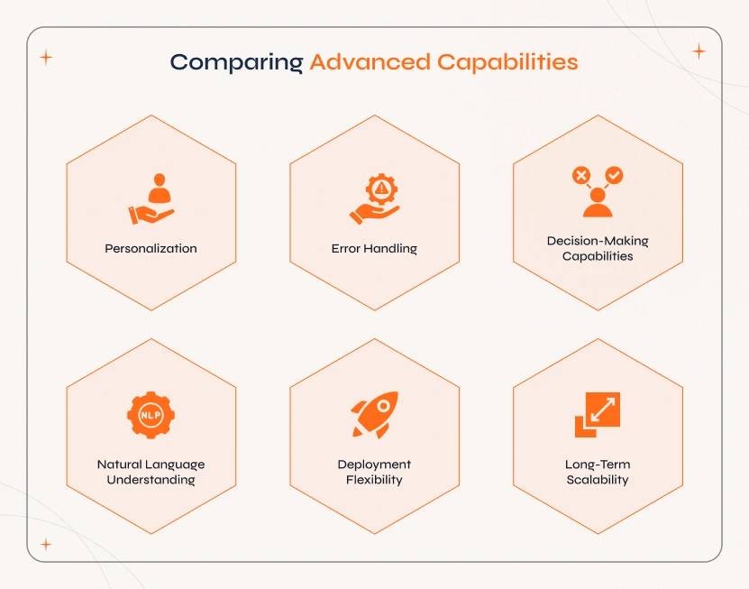
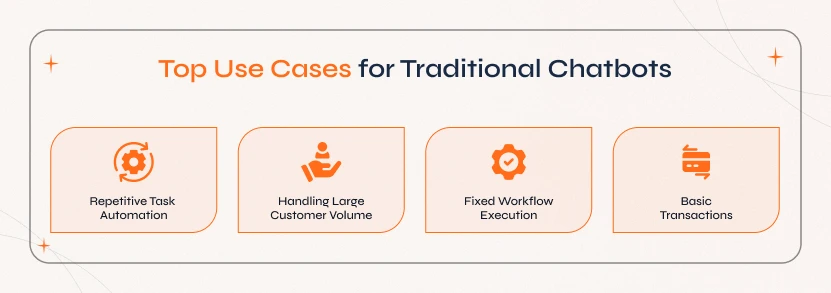
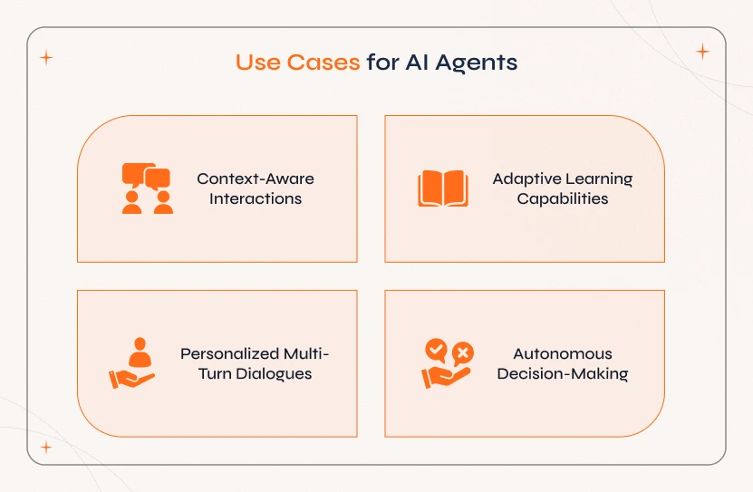
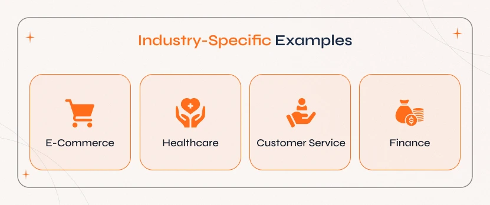
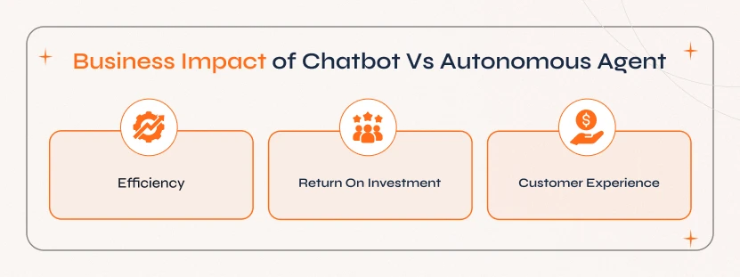

Businesses are moving beyond offering static interactions toward more personalized and intelligent customer experiences. Thus, the conversation has shifted from traditional chatbot vs AI agent. While both are designed to streamline communication and support users, their capabilities and end results differ greatly.
Get to know what are the differences between an AI agent and chatbot, how they differ from each other, along with use cases, and why you should rely on a reputed AI agent development company in detail.
What is a Traditional Chatbot?
A traditional chatbot is a software program designed to perform human-like conversations, typically through text-based interfaces like websites, apps, or messaging platforms. They operate based on predefined rules, scripts, and decision trees rather than using advanced machine learning or natural language processing.
Benefits of Traditional Chatbots
Traditional chatbots played a major role in automating customer support during the early stages of conversational technology. These bots were once the go-to solutions for handling basic tasks, like answering FAQs, booking confirmations, lead capture, etc.
Limitations:
- They have limited context awareness and don't learn or improve over time.
- Cannot adapt to new or unexpected inputs.
- Follow hard coded logic and flowcharts.
- Cannot handle multi-turn or nuanced conversations.
What is an AI Agent?
An AI agent is a more advanced, intelligent system powered by emerging technologies. This includes, but is not limited to, Large Language Models (LLMs), Natural Language Processing (NLP), and Machine Learning (ML). AI agents can perceive context, understand the intent, make decisions, and even take actions autonomously.
Benefits of AI Agents
With the rapid evolution of Artificial Intelligence (AI), AI agents are emerging as the next big shift. AI Agents have overcome the limitations of traditional chatbots in many ways. They are goal-oriented and achieve specific objectives based on user instructions or prompts. They can perform actions and make decisions without human intervention. Unlike traditional chatbots, AI agents are context-aware and thus remember past interactions to inform future decisions. They are dynamic and capable of learning, adapting, and performing complex tasks. Above all, intelligent agents can effortlessly plan and execute tasks that require several steps.
Types of AI Agents
Types of AI agents differ based on how to operate, the data they are trained with, and the way they make decisions or interact with their environment. The most common types include:
- Reactive Agents – Respond to the current situation without storing past experiences.
- Proactive/Deliberative Agents – Use reasoning and planning to predict and act in achieving future goals.
- Conversational Agents – Understand natural language like AI assistants or customer support bots.
- Autonomous Agents – Work in dynamic environments.
A more advanced form of autonomy is seen in Agentic AI, a new class of AI agents that are capable of perceiving, planning, and executing multi-steps independently. They are powered by LLMs and deep learning and thus support collaboration, learning from feedback, and making decisions that align with business goals. Thus, they are ideal for enterprise automation and in carrying out complex workflows.
Traditional Chatbots VS AI Agents - Key Differences Overview
| Feature | Traditional Chatbot | AI Agent | Business Efficiency Winner |
|---|---|---|---|
| Technology | Rule-based & scripted flows | AI/LLM-powered. Often uses neural networks | AI Agent |
| Adaptability | Low. Can’t adjust beyond predefined rules | High. Adapts to new inputs and changing contexts | AI Agent |
| Context Handling | Limited to single-turn interactions | Multi-turn, context-aware conversations | AI Agent |
| Learning Ability | None. Follows fixed logic | Learn from data and user interactions. Continuous improvement | AI Agent |
| Use Case Complexity | Simple, FAQ-style interactions | Complex, goal-oriented workflows | AI Agent |
| Task Autonomy | None. Requires human input for execution | High. Plans and executes tasks independently | AI Agent |
| Natural Language Understanding (NLU) | Basic keyword matching | Advanced semantic understanding | AI Agent |
| Goal Orientation | Answer queries reactively | Works proactively toward objectives | AI Agent |
| Integration Capability | Limited API or app integration | Deep integration with tools, apps, and business systems | AI Agent |
| Autonomy Level | Reactive. Only responds to prompts | Proactive. Can initiate actions and follow-ups | AI Agent |
| Personalization | Static. Limited customization | Dynamic. Adapts to user preferences and behaviors | AI Agent |
| Memory/State Retention | Stateless or session-based | Maintains long-term memory and user history | AI Agent |
| Multi-Modality | Usually text-based only | Supports voice, text, vision, and other modalities | AI Agent |
Traditional Chatbot vs AI Agent: Comparing Advanced Capabilities
Besides the above differences, there are additional factors that differentiate traditional chatbots from AI agents. Here is a more detailed comparison:

1. Personalization
Chatbots are not designed to provide personalized responses to users. Their replies are based on pre-programmed rules and lack customization.
AI agents are advanced and often customize their responses based on user preferences, history, and context. i.e., they can analyze the data and provide a personalized experience for each user, such as targeted recommendations or customized workflows.
- Best Fit for Business - AI Agent
2. Error Handling
Traditional chatbots often fail or redirect the user to a human agent when they encounter an unexpected question or response.
Whereas AI agents can handle dynamic inputs better than chatbots. In fact, they can respond even to unclear questions, provide clarifications, or adapt responses by learning from past failures.
- Best Fit for Business - AI Agent
3. Decision-Making Capabilities
Chatbots make decisions based on pre-defined rules and thus lack judgment or complex decision-making skills.
AI agents, on the other hand, are capable of making informed decisions based on the data analyzed, past interactions, and reasoning. Thus, they can handle more nuanced situations.
- Best Fit for Business - AI Agent
4. Natural Language Understanding
Traditional chatbots often struggle with understanding variations in user inputs. They rely on exact matches to provide responses.
As far as AI agents are concerned, they use advanced NLP and thus understand variations in human language. This includes slang, idioms, and even misspellings. Thus, AI agents can respond more naturally and accurately.
- Best Fit for Business - AI Agent
5. Deployment Flexibility
Traditional chatbots are deployed in specific contexts like website pop-ups, apps, customer service portals, etc.
AI agents are more versatile in deployment and can be embedded into multiple platforms like smartphones, websites, IoT devices, internal business tools, etc.
- Best Fit for Business - AI Agent
6. Long-Term Scalability
When the requests increase, chatbots may need constant rule updates, which becomes hard to manage.
Scaling up AI agents is more effective over time by learning from new data and adjusting their responses automatically without needing constant updates.
- Best Fit for Business - AI Agent
Boost CX & automation with smart AI agents by Sparkout
When to Use a Traditional Chatbot vs AI Agent – Scenarios & Industry-Specific Examples
The decision to choose between a traditional chatbot and an AI agent depends on several factors, including the complexity of the tasks, the level of personalization required, and the resources available. Check out how each would be effective with the industry-specific examples:

1. Traditional Chatbot – Best Use Cases
1.1 Simple, Repetitive Tasks
Traditional chatbots are well-suited to handle routine and repetitive tasks in any business that doesn't require complex problem-solving or deep understanding.
Example: Customer support service for answering FAQs.
1.2 High-Volume Customer Interaction
Chatbots are effective in business environments where there are many users who need basic responses.
Example: Lead generation and qualification.
1.3 Fixed Workflows & Decision Trees
Chatbots work well for tasks that follow a clear, predefined sequence like a flowchart or decision tree.
Example: Scheduling appointments in a healthcare setting.
1.4 Basic Transactional Services
When the user interactions involve simple transactions or actions based on predefined rules.
Example: Reordering past meals in a food delivery app.
2. AI Agent – Best Use Cases

2.1 Complex Interactions with Contextual Understanding
AI agents are ideal when the tasks or conversations in a business sector require real understanding of context or involve solving complex problems.
Example: Virtual Health Assistant (VHA)
2.2 Continuous Learning & Adaptation
It is better for businesses to use AI agents when there is a need for the system to continuously learn from user interactions, improve responses, and make better decisions over time.
Example: Customer support in the banking sector.
2.3 Personalized, Multi-Turn Conversations
Sales AI agents work best for conversations or tasks that need to adapt to individual user needs and handle multiple interactions.
Example: Insurance claims in the financial sector.
2.4 Multi-Tasking & Autonomous Decision-Making
Businesses can choose AI agents to handle complex, multi-step tasks that require reasoning, autonomous decision-making, and taking action on behalf of the users.
Example: Automated financial portfolio management.
3. Industry-Specific Examples

- Traditional Chatbot: An e-commerce store where a chatbot assists customers who ask, "Where is my order?" with predefined responses.
- AI Agent: Provides personalized product recommendations based on user behavior, helps with advanced product comparison, and processes returns autonomously by understanding the context.
- Traditional Chatbot: A financial service company that uses a chatbot to collect customer details like name, email, etc., and qualify leads before directing them to human agents.
- AI Agent: AI in the financial sector offers personalized advice, assists with investment decisions, real-time fraud detection, etc., by learning patterns from user behavior.
- Traditional Chatbot: A food delivery app uses a chatbot to help users quickly reorder a past meal, apply a discount code, and schedule delivery by following a predefined script without needing to understand the context.
- AI Agent: Handles multi-turn, complex conversations that involve solving customer issues and offering personalized troubleshooting steps.
- Traditional Chatbot: A healthcare provider uses chatbots to handle appointment scheduling, send reminders, and answer simple health-related questions.
- AI Agent: Acts as a virtual health assistant that can interact with patients in real time, offer personalized medical advice, track health metrics, and provide advanced guidance based on past interactions.
4. Hybrid Approaches – Merging Chatbots & AI Agents
Businesses are opting for hybrid approaches that combine the efficiency of traditional chatbots with the intelligence and adaptability of AI agents. So, instead of dealing with traditional AI agent vs chatbot as a strict choice, businesses merge both technologies to achieve the best results.
4.1 Combining Strengths
With the hybrid approach, businesses can utilize the strengths of both systems:
Chatbots can handle high-volume interactions and routine tasks that are simple and rule-based. This way, they free up human agents to let them deal with more complex tasks, whereas AI agents can proceed when chatbots transfer the conversation or when the user needs more personalized, context-aware interactions.
4.2 Layered Architecture
Chatbots will act as the first line of contact, and when the conversation exceeds the chatbot's capabilities, the AI agent will take over the task seamlessly. You may think of this with a customer service chatbot addressing basic queries, and when the customer needs more help, the AI agent steps in to offer personalized troubleshooting advice and initiate returns.
4.3. Progressive Escalation
Here, the chatbot takes up the initial engagement and problem-solving, while the AI agent is used to handle more complex tasks and offer advanced solutions. This escalation model helps create smooth customer experiences while saving human resources.
4.4 Continuous Improvement
By partnering with a trusted AI agent development company, AI agents can be trained continuously using past interactions from the chatbot and other data sources. This way, AI agents can adapt to new situations. It might also help find the gaps in chatbot capabilities, which can be rectified in future versions.
Thus, traditional chatbots are best suited for simple, repetitive tasks with clear workflows, whereas AI agents can take up more complex, multi-turn interactions, personalized experiences, and autonomous decision-making. With the hybrid approach, businesses can achieve efficiency while utilizing the capabilities of AI when required.
Maximize chatbot and AI agent power for seamless, personalized customer interactions.
Business Impact of Chatbot Vs Autonomous Agent - Efficiency, Cost & Experience
When choosing between a traditional chatbot and an AI agent, businesses should not only ensure the right technology is used but also consider its overall impact on operations, ROI, and customer satisfaction.
Let's take a closer look at the factors contributing to business efficiency in traditional chatbots and AI agents.

1. Efficiency
Traditional Chatbots are efficient only when it comes to handling high-volume, repetitive tasks such as answering FAQs, scheduling appointments, collecting customer data, etc. As they follow a rule-based structure, chatbots ensure predictable responses and thus work efficiently for simple, structured interactions.
- Why Choose AI Agents – They take efficiency further by handling complex, multi-step tasks autonomously. AI agents understand the context, recall past interactions, and adapt responses based on users' needs.
2. ROI
Traditional Chatbots comes with low upfront cost, and they are fast and easy to deploy. While chatbots come with minimal maintenance, their limited capabilities result in higher long-term costs.
- Why Choose AI Agents – Development and integration costs of AI agents are high. Sales AI agents require more training and computing resources. However, they deliver long-term savings by reducing support team workload, offering 24/7 assistance, personalized interactions, and scalability.
3. Customer Experience
Traditional Chatbots provide a basic level of interaction. As they follow scripts, answering queries outside the trained approach is difficult and this may frustrate the customer.
- Why Choose AI Agents – They offer a more conversational, human-like experience as they are capable of understanding user sentiment, responding according to tone, and adjusting the conversation to deliver helpful responses.
Why Sparkout Tech is Your Best Choice for AI Agent Development
At Sparkout Tech, we understand that choosing between traditional chatbots and advanced AI agents can impact your business. With our advanced AI agent development services, businesses can automate tasks, enhance customer experiences, and unlock operational efficiency. Find out why you should hire us for AI agent development:
- We specialize in developing intelligent AI agents that understand complex queries and offer personalized interactions.
- Our AI agents can be integrated seamlessly with existing business systems and provide more valuable customer engagement.
- We build AI agents that boost efficiency and reduce human intervention, allowing your team to focus on more valuable tasks.
- Our AI agents can be updated and improved, adapting to new data, user behavior, and emerging technologies.
Conclusion
The choice between a traditional chatbot and an AI agent depends on your business goals, resources, and the complexity of operations. If you intend to deliver high-quality interactions and automate beyond simple tasks, then investing in an AI agent seems futuristic.
Yokesh Sankar, COO at SparkoutTech